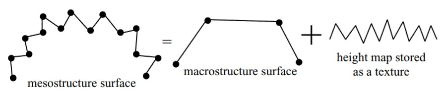
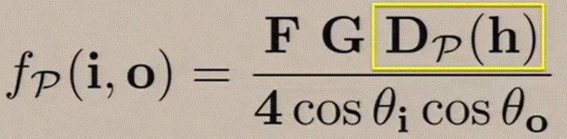

Rendering Macrogeometry
Texture Mapping
Several BRDFs have been suggested to render scratches on surfaces. One of the common characteristics of all these models is the fact that results give a nearly perfect continuity of the light response on object surfaces. This results in a homogeneous aspect. However, real-world surfaces rarely have such perfect uniformity. To render more realistic surfaces, the concept of texture was introduced. One method to take surface irregularities into account is two-directional texture mapping, introduced by Catmull in 1974. This technique allows images to be pasted onto object surfaces. The colour of the pixels of the texture map is used to modulate the diffuse coefficient of the reflectance model by simple multiplication. This method can be used to modulate other parameters of a BRDF as well.[1]
Bump mapping
This technique was introduced by Blinn in 1978. In this technique, a height map is defined, pasted onto an object’s surface, and then the heights are used to derive new normals. [1] A bump map is typically a grey scale image with 8 bits of colour information. The 256 different values, representing the 256 different colours of black, white and grey, are used to tell the bump map exactly two things: up or down. The brighter the values, the more the details appear to be pulling out of the surface, while the darker values represent details that push down into the surface. A 50% greyness value represents little to no detail. [5]
Limitations:
Since this technique fakes the geometry, the limitations become visible when the bumps are too high.[1]
Normal mapping
Similar to bump maps, though considered as a newer and better technique, the details rendered by normal maps are also fake. Normal maps also create depth detail, but in a different way. It uses RGB information that corresponds to the X, Y and Z axis in 3D space. This information tells the application exactly how the normals are oriented for each area, and this orientation determines how that particular area should be shaded.[5]
Displacement mapping
This method provides a way to render details by adding mesostructure properties to the macrostructure model. This is done with the help of a height map that describes the difference between the macrostructure and mesostructured models. The algorithms for this technique obtain a distance from the height map and displace sample points perpendicularly to the normal of the macrostructure surface according to this distance.
The sample point can either be a vertex of the original mesh (per-vertex displacement mapping), or a point corresponding to the texel centre (per-pixel displacement mapping). [3]

Figure 1. The basic idea of displacement mapping
Displacement mapping techniques allow the simulation of different kinds of surface details. Some of them are based on generating additional geometry, while others simulate detail by modifying surface normals or performing ray tracing on height maps. These techniques are mostly suited for big surface features or low-frequency detail. Otherwise, they require high resolution maps and good anti aliasing methods that can be very time consuming, especially as the distance to the viewer increases. Other approaches have modeled grooves by modifying the object geometry for interactive sculpting purposes. [2]
Bidirectional Texture Function (BTF)
A BTF(Bidirectional Texture Function) is a more general form of texture mapping. It is defined as a complete map of BRDFs, resulting in a dependence on the surface aspect according to viewing direction, incident light direction and position on the surface.[1]
Some proposed models summarised
1. Using P-NDF and P-BRDF [6]
A method proposed by Yan et al.(2014) models high resolution specular surfaces using normal maps. The effect caused by macrogeometry of scratches can be rendered by considering a whole surface patch as seen through a single pixel. A P-BRDF is a BRDF integrated over a whole patch P. Consider surface with high resolution normal map. Their pixel will map a gaussian footprint P in the map. Now if we sample gaussian P we get probability distribution of normals on unit disk known as the P-NDF. Different pixel footprints over different normal maps leads to different P-NDF shapes. The only thing common to them is that they have sharp features and cannot be approximated by smooth functions. Yan et al. developed an algorithm to calculate the P-NDF at a given point. Then all that is needed to shade surfaces is to plug the P-NDF evaluation into a standard micro-facet BRDF, making it a P-BRDF.

Figure 2. The term in the yellow box is the NDF evaluation for the given half vector
2. Using diffraction [4]
Another proposed model involves introducing a wave-optical model to simulate complex iridiscent behaviour of scratches. The steps involved are:
- The appearance of worn surfaces is rendered. To this end the scratches within a coherence area is retrieved.
- The contributions of the induvidual scratches are weighted according to a Gaussian filter.
- Wave optics is utilised to shade each scratch induvidually and accumulate their contributions coherently.
References:
[1] S. Merillou, J.M. Dischler, D. Ghazanfarpour "Surface scratches: measuring, modeling and rendering"
[2] C. Bosch, X. Pueyo,S. Mérillou and D. Ghazanfarpour, "A Resolution Independent Approach for the Accurate Rendering of Grooved Surfaces"
[3] L´aszl´o Szirmay-Kalos and Tam´as Umenhoffer, "Displacement Mapping on the GPU — State of the Art", COMPUTER GRAPHICS forum Volume 27 (2008), number 6 pp. 1567–1592
[4] Sebastian Werner, Zdravko Velinov, Wenzel Jakob, and Matthias B. Hullin.
2017. "Scratch iridescence: Wave-optical rendering of diffractive surface structure." ACM Trans. Graph. 36, 6, Article 207 (November 2017)
[5] PluralSight: Elliminate Texture Confusion: Bump, Normal and Displacement Maps https://www.pluralsight.com/blog/film-games/bump-normal-and-displacement-maps
[6] Ling-Qi Yan, Milos Hasan,Wenzel Jakob, Jason Lawrence, Steve Marschner, Ravi Ramamoorthi "Rendering Glints on High-Resolution Normal-Mapped Specular Surfaces"ACM Transactions on Graphics (TOG) - Proceedings of ACM SIGGRAPH 2014
Volume 33 Issue 4, July 2014
Article No. 116